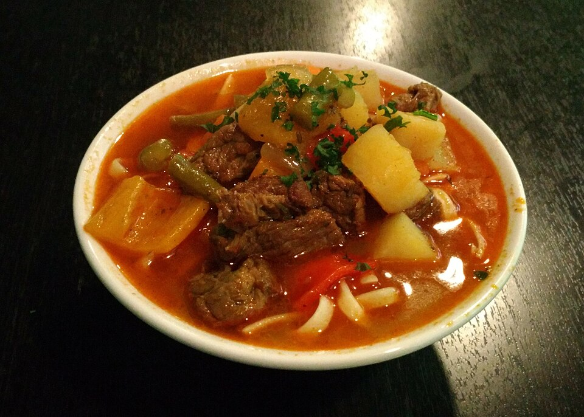

Жареный лагман, или каурма лагман — это техничный баланс между упругой пшеничной нитью, агрессивным жаром сковороды и сочностью маринованной говядины.
В отличие от суповой версии, здесь фокус смещен на текстуру овощей и глубокую карамелизацию мяса, достигаемую за счет правильной подготовки белка.
Heat oil in a large pot over high heat. Reduce heat to medium-high; cook and stir onion in hot oil until golden, 3 to 5 minutes.
Stir in beef strips, cumin, and black pepper; cook until beef is browned, about 5 minutes. Stir in tomato paste and cook for 2 to 3 minutes.
Stir carrot into the pot; cook until coated with tomato paste, 2 to 3 minutes. Add green bell pepper; cook for 1 minute. Add potatoes and celery; cook for 5 minutes.
Pour in water; bring to a boil. Season water with salt. Reduce heat to low and simmer soup until potatoes are soft, about 40 minutes.
Bring a large pot of lightly salted water to a boil. Cook noodles in boiling water, stirring occasionally, until tender yet firm to the bite, 3 to 5 minutes.
Rinse and drain well. Divide among serving bowls. Ladle hot soup over noodles.